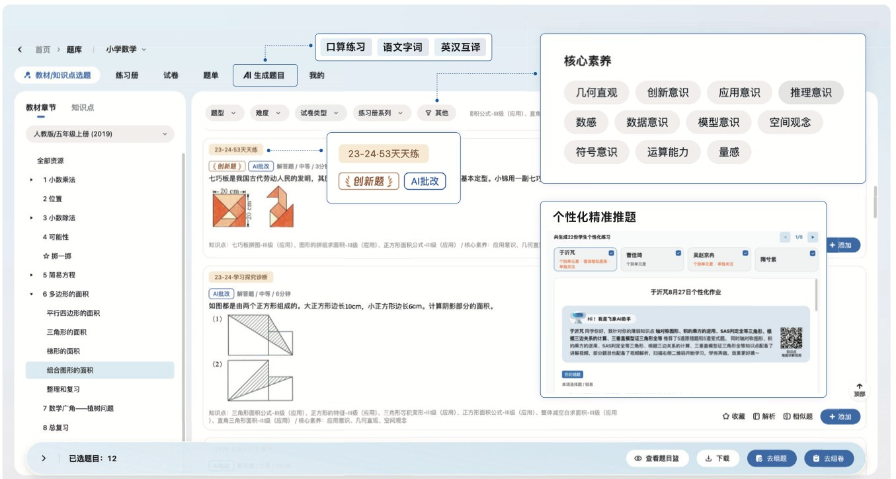
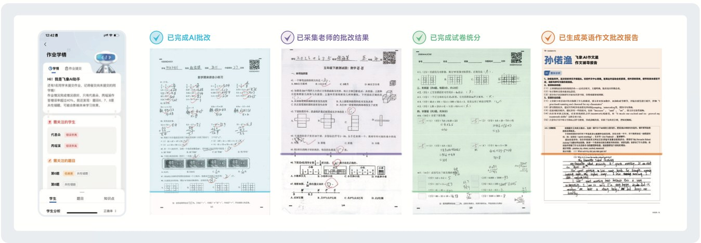
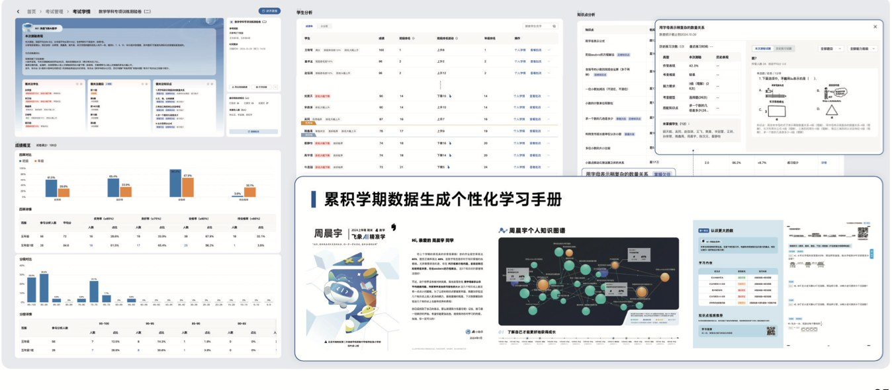

作业设计
从题海到量身定制，支持本地题库与 AI 精准推题。
飞象智能作业以 AI 赋能精准教学，构建“作业精准设计、数据有效采集、学情可视化、以评促学个性化”的数据驱动闭环，推动教学模式改革，为教师减压增能，为学生减负提质，为管理提供标尺。
从题海到量身定制，支持本地题库与 AI 精准推题。
同步完成批改与数据入库，让反馈从小时级变成分钟级。
沉淀作业、测验与批改数据，形成可追踪的学情画像。
基于真实薄弱点生成个性化建议、练习和学习手册。
飞象题库提供海量题型新、考点新、时间新的本地创新题，并支持 AI 一键生成 AI 口算、AI 字词、AI 英汉互译等高频小练题单。系统可基于班级和学生个人学情精准推题，实现共性补强、分层进阶、个性根治。

系统同步完成批改与数据入库，将教师从机械劳动中解放。批改全题型覆盖，支持应用题、作文等复杂题型；多维度采集学生原始作答、教师批改痕迹和分数等关键数据。

AI 驱动作业数据统计、聚类与多维归因，为教学决策提供靶向建议，构建“作业-学情-讲评-练习”的数据驱动闭环，让教学决策聚焦真实薄弱点，赋能教师精准干预。
